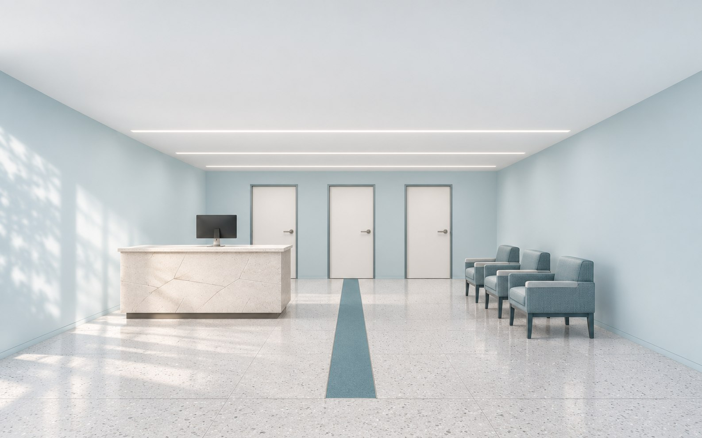
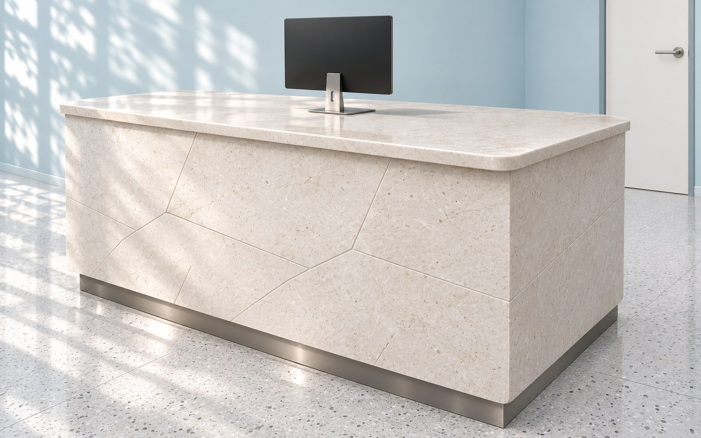
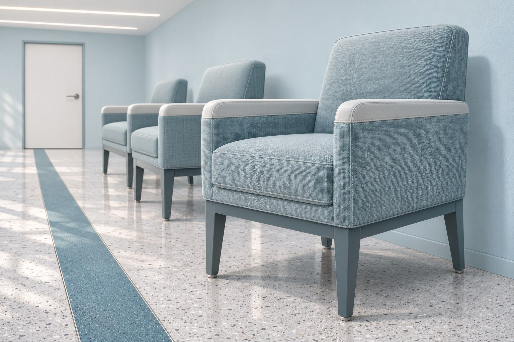

Оборудование
Получить габариты установок, точки подключения и сервисные зоны.
Посетитель видит, куда идти. Служебная работа остаётся за своей дверью. Спокойствие начинается с устройства пространства.
Пройти по плану
Визуализации сгенерированы ИИ для концепта; это не фотографии реализованного объекта.


Стойка не отгораживает администратора. Сбоку — пониженная секция для общения сидя, снизу — свободное место для коленей.
Документы и техника спрятаны от посетителя. В поле зрения остаются человек и понятная навигация.
Габариты и доступность уточняются по обмерам и заданию клиники.
Публичная зона находится у входа. Кабинеты открываются в коридор; служебная часть имеет отдельный доступ.
Пример — концепт для портфолио. Площадь 120 м² условная; это интерьерная схема, не медицинский технологический проект. Потоки и состав помещений согласуются с профильным специалистом.
Пол без сложного рисунка. Швы и примыкания уточняются в рабочем проекте.
Фасады стойки и служебного хранения. Проверка стойкости к средствам клиники по паспорту материала.
Светлая основа стен. Совместимость покрытия и режима уборки подтверждается поставщиком.
Получить габариты установок, точки подключения и сервисные зоны.
Согласовать трассы, вентиляцию и доступ к коммуникациям.
Проверить работу персонала и перемещение посетителей с технологом.
В ожидании — рассеянный свет без открытых ярких источников. В кабинете — отдельный общий контур; медицинский свет задаёт оборудование.
Пример — концепт для портфолио. Смета для 120 м²; без ремонта, оборудования, медицинской технологии и инженерных разделов.
Зонирование, мебель и связи помещений. 700 ₽/м².
Палитра, отделка и основные предметы. 900 ₽/м².
Планы отделки, света, развёртки и мебельные узлы. 1 400 ₽/м².
Ведомости материалов и оборудования интерьера. 500 ₽/м².
3 500 ₽/м² 420 000 ₽
Визуализация — отдельная услуга от 30 000 ₽.